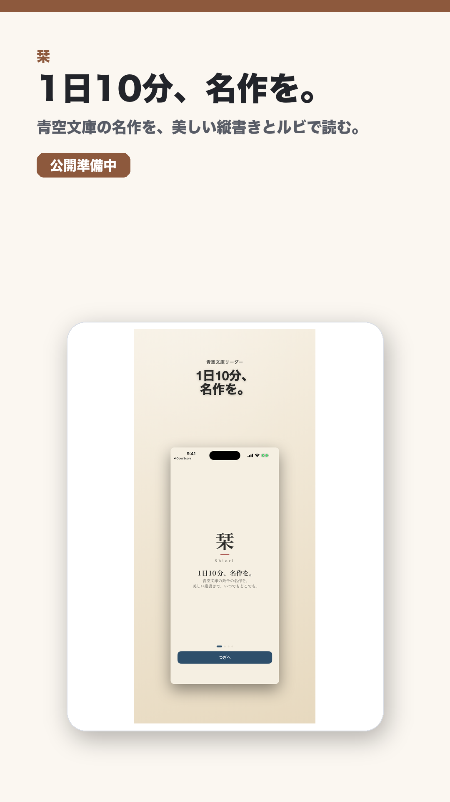

読書 / iOS / iPadOS / macOS
栞
1日10分、名作を。
青空文庫の名作を、美しい縦書きとルビで読めるiPhone/iPad/Mac読書アプリ。

紹介文
1行紹介
青空文庫の名作を、美しい縦書きとルビで読めるiPhone/iPad/Mac読書アプリ。
媒体向け概要
「栞」は、青空文庫の名作を縦書き、ルビ、読書統計つきで読める読書アプリです。短い読書時間でも続けやすい体験を目指しています。
掲載向けポイント
切り口読書習慣、青空文庫、縦書きビューア、日本文学の記事向け。
公開状態ASC app record found but public App Store URL still returns 404
Contactasd95179517@gmail.com
素材

- square PNG: https://tmpacc100.github.io/assets/social/shiori-square.png
- story PNG: https://tmpacc100.github.io/assets/social/shiori-story.png
- vertical_1080x1920_mp4: https://tmpacc100.github.io/assets/video/shiori-short.mp4
{kind=link}
{kind=link}
配布リンク
- Landing Page: https://tmpacc100.github.io/shiori/
- X organic: https://tmpacc100.github.io/go/shiori/x/
- Threads organic: https://tmpacc100.github.io/go/shiori/threads/
- TikTok organic: https://tmpacc100.github.io/go/shiori/tiktok/
- YouTube Shorts: https://tmpacc100.github.io/go/shiori/youtube-shorts/
- Email outreach: https://tmpacc100.github.io/go/shiori/email/
- Product Hunt: https://tmpacc100.github.io/go/shiori/producthunt/